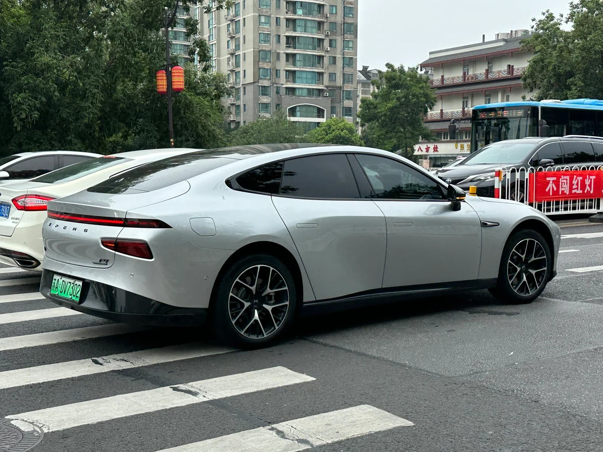
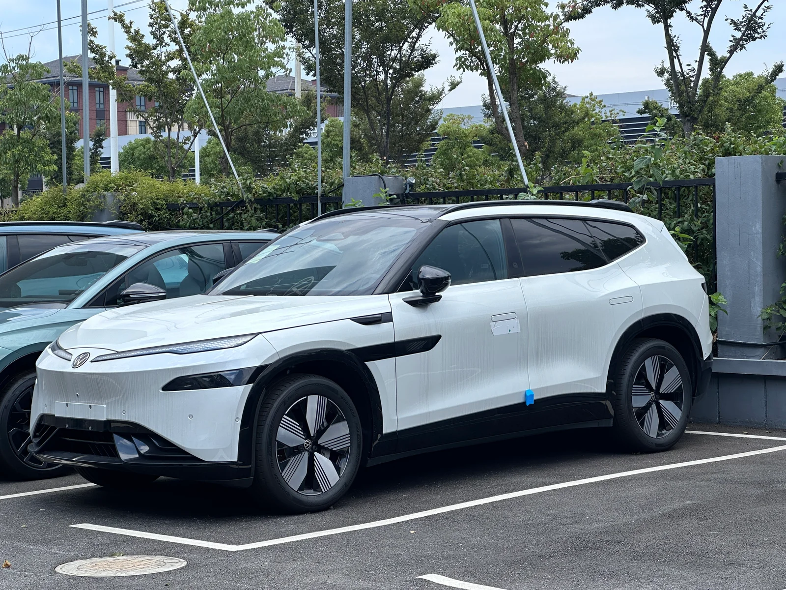

▲ ID.유닉스09와 같은 폭스바겐·샤오펑 합작 라인업의 ID.유닉스08(SUV). ID.유닉스09 실차 사진은 아직 공개되지 않아, 같은 협업 계열 모델로 대체했다 ⓒ JustAnotherCarDesigner, Wikimedia Commons (CC0)
폭스바겐이 중국 전기차 스타트업 샤오펑(Xpeng)과 손잡고 개발한 전기 플래그십 세단 'ID.유닉스(ID. Unyx) 09'를 지난 4월 21일 베이징 모터쇼에서 처음 공개한 데 이어, 지난 7월 10일 중국 규제당국 정보공시 목록에 이름을 올리며 양산 준비 단계에 들어갔습니다. 로버트 치섹(Robert Cisek) 폭스바겐 승용차 브랜드 중국 법인 최고경영자(CEO)는 같은 날 웨이보를 통해 ID.유닉스09가 2026년 하반기 중국에서 정식 출시될 예정이라고 직접 확인했습니다. 폭스바겐 측은 이 차를 "폭스바겐과 샤오펑이 24개월 안에 함께 개발한 두 번째 모델"로 소개하고 있습니다.
1. 폭스바겐과 샤오펑, 무엇을 함께 만들었나
폭스바겐과 샤오펑의 협업은 2023년 7월 폭스바겐이 샤오펑 지분 4.99%를 약 7억 달러에 인수하면서 시작됐습니다. 양사는 이 협약을 통해 폭스바겐 브랜드로 판매될 신규 모델을 공동 개발하기로 했고, 그 결과물로 나온 것이 지난해 11월 중국 규제당국에 처음 이름을 올린 SUV 'ID.유닉스08'과 이번 플래그십 세단 'ID.유닉스09'입니다. 두 모델 모두 폭스바겐과 JAC 모터스의 합작법인인 폭스바겐 안후이(폭스바겐 지분 75%)를 통해 중국 허페이 공장에서 생산되며, 통상 4~5년이 걸리는 신차 개발 기간을 24개월 안팎으로 단축했다는 점이 특징으로 꼽힙니다. 참고로 올해 5월 출시된 준중형 세단 'ID.유닉스07'은 폭스바겐이 샤오펑과 별도로 개발한 중국 전용 전자 아키텍처 'CEA(China Electronic Architecture)'를 처음 적용한 모델로, 이번 ID.유닉스09와는 개발 계보가 다릅니다.
폭스바겐이 중국 로컬 업체와의 협업에 속도를 내는 배경에는 현지 전기차 시장에서 빠르게 밀려난 위기감이 자리하고 있습니다. 폭스바겐은 올해 20종이 넘는 전동화 모델을 중국 시장에 투입하고, 2030년까지 30종의 신차를 선보이는 '역대 최대 규모의 제품 공세'를 예고한 상태입니다. ID.유닉스09는 라비다 프로, 사지타르, 마고탄 등 기존 폭스바겐 중국 라인업의 최상위에 놓일 전기 플래그십으로 자리매김할 전망입니다.
2. 디자인 & 제원 — 그랜저보다 큰 쿠페형 세단

▲ 같은 폭스바겐 ID 패밀리의 중국형 세단 ID.7 비지온. ID.유닉스09는 이 차보다 차체가 더 크고 스포티한 쿠페형 실루엣을 갖췄다 ⓒ Dinkun Chen, Wikimedia Commons (CC BY-SA 4.0)
ID.유닉스09는 전장 5,081mm, 전폭 1,980mm, 전고 1,509~1,526mm, 휠베이스 3,030mm의 몸집을 갖췄습니다. 이는 국내 준대형 세단인 현대 그랜저(전장 5,035mm)보다도 긴 수치이자, 같은 폭스바겐 ID 패밀리의 세단인 ID.7보다 전장은 119mm, 휠베이스는 64mm 더 큽니다. 공차중량도 2,207~2,307kg에 달해 2톤을 훌쩍 넘습니다. 폭스바겐은 이 차를 4도어 쿠페형 세단으로 분류하는데, 아우테온(Arteon)을 연상시키는 완만하게 흘러내리는 루프라인을 가지면서도 해치백이 아닌 일반 트렁크 구조를 유지한 것이 특징입니다.
외관은 좌우로 갈라진 분할형 헤드램프와 그 사이를 넓게 가로지르는 LED 주간주행등, 조명이 내장된 폭스바겐 로고가 눈에 띕니다. 프런트 범퍼에서 펜더와 도어까지 이어지는 블랙 몰딩과 A필러·루프·사이드미러에 적용된 블랙 하이그로시 트림이 스포티한 인상을 강화하고, 21인치 대구경 휠에 피렐리 P제로 타이어와 브렘보 브레이크를 조합했습니다. 야간 주행 안전성을 높이는 HD 매트릭스 프로젝션 헤드램프와 인터랙티브 LED 조명도 탑재됩니다.
| 항목 | 제원 |
|---|---|
| 전장 × 전폭 × 전고 | 5,081mm × 1,980mm × 1,509~1,526mm |
| 휠베이스 | 3,030mm |
| 공차중량 | 2,207~2,307kg |
| 차체 형식 | 4도어 쿠페형 세단(B세그먼트) |
| 생산 | 폭스바겐 안후이(중국 허페이) |
3. 파워트레인과 배터리 — 최고출력 496마력, CLTC 730km
파워트레인은 두 가지로 나뉩니다. 기본형은 후륜에 230kW(308마력) 모터 하나만 얹은 후륜구동 사양이고, 상위 사양은 전륜에 모터를 하나 더 추가한 듀얼모터 사륜구동으로 합산 최고출력이 370kW(496마력)에 달합니다. 2.3톤을 넘는 공차중량에도 불구하고 두 사양 모두 최고속도는 시속 200km에 이르는 것으로 알려졌습니다. 배터리는 CATL이 공급하는 리튬인산철(LFP) 셀을 사용하며, 배터리 팩 자체도 폭스바겐 안후이 공장에서 직접 생산됩니다. 1회 충전 주행거리는 중국 기준 시험방식인 CLTC 기준 최대 730km로 확인됐는데, 이는 폭스바겐이 그동안 중국에서 판매해 온 순수전기 세단 가운데 최상위권에 해당하는 수치입니다.
다만 정확한 배터리 용량, 0~100km/h 가속 시간, 트림별 가격은 이 글을 쓰는 시점까지 폭스바겐이나 샤오펑 양사 모두 공식적으로 공개하지 않았습니다. 먼저 공개된 SUV 'ID.유닉스08'이 폭스바겐·샤오펑 협업 파워트레인을 공유하는 만큼, 업계에서는 ID.유닉스09에도 유사한 대용량 LFP 배터리 라인업이 적용될 가능성이 거론되지만, 이는 아직 공식 확인된 사항이 아니라는 점에 유의할 필요가 있습니다.
4. 스마트 기능 — 샤오펑 VLA 2.0 자율주행 이식

▲ ID.유닉스09에 지능형 주행보조 기술을 제공하는 협업사 샤오펑의 세단 P7. ID.유닉스09 실차가 아닌 샤오펑 자체 브랜드 모델이다 ⓒ JustAnotherCarDesigner, Wikimedia Commons (CC BY-SA 4.0)
ID.유닉스09의 가장 큰 특징은 샤오펑의 지능형 주행 기술을 대거 이식했다는 점입니다. 폭스바겐은 이 차에 시각-언어-행동(VLA, Vision-Language-Action) 대형 모델 기반의 지능형 주행보조 시스템을 탑재했다고 밝혔는데, 이는 샤오펑이 자사 모델에 적용해 온 'VLA 2.0' 스마트 주행 솔루션을 기반으로 합니다. 폭스바겐 측은 이를 "AI 비서와 결합된 전 시나리오 대응 스마트 드라이빙 어시스턴트"로 소개하며, 업계 최상위권 수준의 지능형 주행 경험을 목표로 한다고 설명했습니다.
완성차 업체가 전자 아키텍처와 하드웨어를 만들고, 스타트업이 소프트웨어와 자율주행 두뇌를 제공하는 이 같은 역할 분담은 최근 중국 전기차 시장에서 흔히 볼 수 있는 협업 모델입니다. 폭스바겐 입장에서는 자체 개발보다 훨씬 짧은 시간에 중국 소비자들이 요구하는 수준의 지능형 사양을 확보할 수 있다는 장점이 있고, 샤오펑 입장에서는 대형 완성차 업체의 생산·판매망을 통해 자사 기술의 채택 범위를 넓힐 수 있다는 점에서 서로의 이해관계가 맞아떨어진 결과로 풀이됩니다.
5. 중국 전용 모델, 국내외 출시 가능성은?

▲ ID.유닉스09와 같은 협업 라인업의 ID.유닉스08 측면부. 폭스바겐·샤오펑 합작 모델들은 모두 중국 시장 전용으로 기획됐다 ⓒ JustAnotherCarDesigner, Wikimedia Commons (CC0)
폭스바겐은 ID.유닉스09를 비롯한 유닉스 시리즈 전 모델을 처음부터 중국 시장만을 겨냥해 기획했습니다. 차명의 '유닉스(Unyx)'부터 중국 현지 라인업 전용으로 붙여진 이름이며, 전자 아키텍처와 소프트웨어 역시 중국 협력사와의 공동 개발로 완성된 만큼 유럽이나 북미 등 다른 지역으로 수출될 가능성은 낮게 점쳐지고 있습니다.
종합하면 ID.유닉스09는 폭스바겐이 중국 로컬 업체의 기술력을 적극적으로 받아들여 만든 '현지화 전기차'의 최신 사례입니다. 완성차 업체가 소프트웨어·자율주행 역량에서 중국 스타트업에 의존하는 흐름이 짙어지는 가운데, 이 차가 실제 판매 시장에서 어떤 반응을 얻을지가 폭스바겐의 향후 중국 전략을 가늠하는 시금석이 될 전망입니다. 정확한 가격과 세부 사양은 2026년 하반기 정식 출시 시점에 맞춰 추가로 확인할 필요가 있습니다.